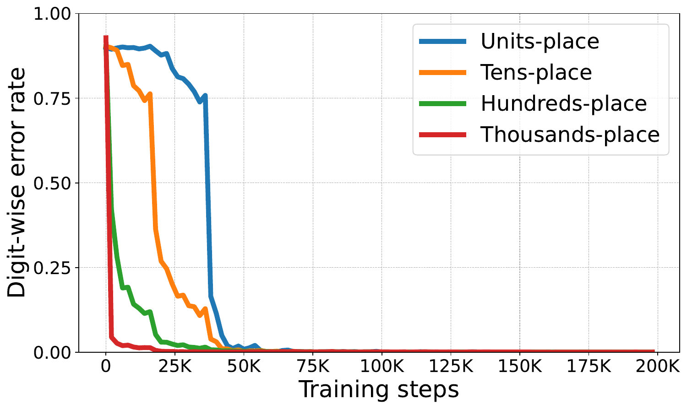

Shattered Compositionality: Counterintuitive Learning Dynamics of Transformers for Arithmetic
Transformers can acquire arithmetic subskills in reverse or in parallel relative to standard procedures. We study how training-data correlations shape these learning patterns and how competition between subskills can lead to brittle generalization.
My research contributions
I tracked subskill acquisition across addition, multiplication, comparison, and sorting; developed conditional mutual information diagnostics; and designed targeted ablations. My experiments included roughly 10M–100M parameter transformers, Pythia-1B fine-tuning, and reasoning robustness evaluations across 10 pretrained LLMs.